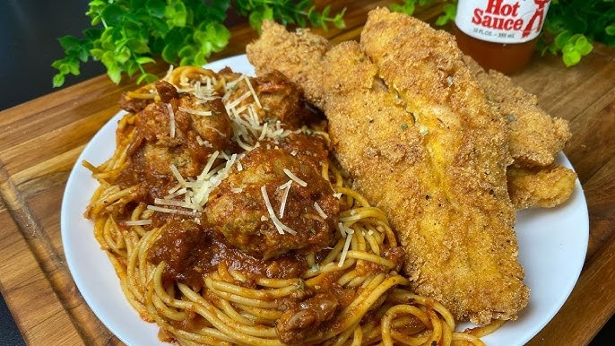
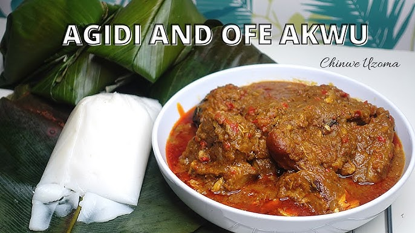
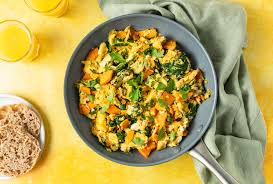
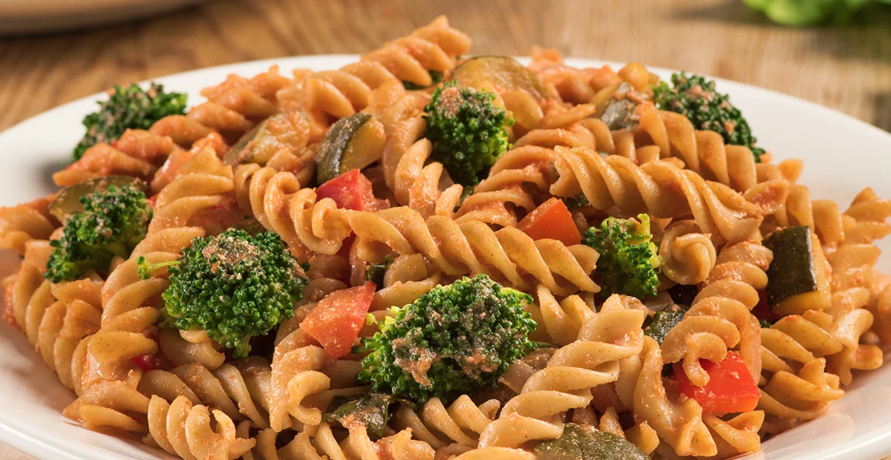
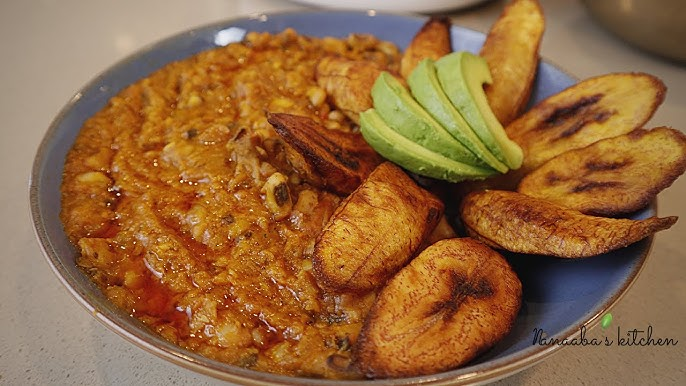

Popular Dinner Foods

Wheat and Bitter Leaf Soup
A hearty and nutritious soup made with wheat and bitter leaf, perfect for a satisfying dinner.
carbohydrate
Spaghetti & Catfish
Hey ya'll let's make fried catfish and spaghetti and meatballs! This is a classic fish Friday in the South, but we also do it with hushpuppies and friesDelicious dinner option description here.
protein
Agidi and Stew
Delicious dinner option description here How to make Agidi and Ofe Akwu.
protein
Boiled Sweet Potatoes and Scrambled Eggs
Delicious dinner option description here.
carbohydrate
Vegetable Pasta Medley
Delicious dinner option description here Choosing grains is not just good for your health, it can also be delicious.
carbohydrate
Beans Stew and fried plantains
High in fiber and protein, this hearty stew pairs perfectly with crispy fried plantains for a satisfying dinner.
carbohydrate